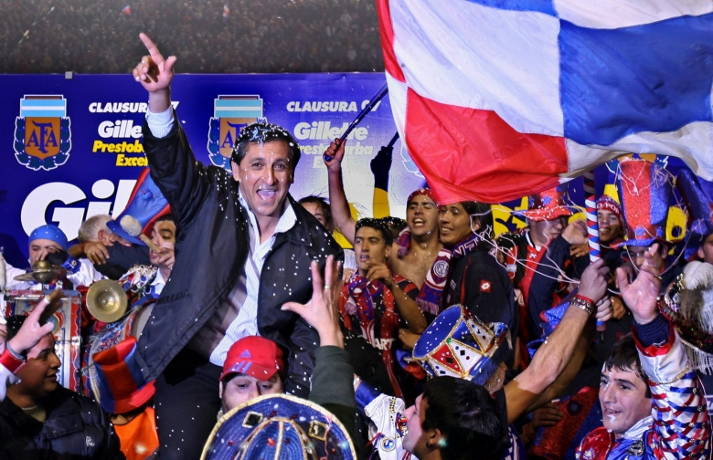

Torneo Clausura 2001
San Lorenzo lograria un record que aun sigue vigente, siendo el equipo con mas partidos ganados al hilo y que mas puntos sumo en un campeonato corto.
Seguir Viendo

Torneo Clausura 2007
Luego de un 2006 critico para San Lorenzo, el equipo pudo recomponerse con Ramon Diaz al mando y con lavezzi como figura.
Seguir Viendo
Torneo Inicial 2013
San Lorenzo logro salvarse del decenso una temporada anterior, asumio Pizzi y con un equipo completo consiguio un nuevo campeonato.
Seguir Viendo
Supercopa 2015
San Lorenzo le gano 4-0 a Boca Juniors en un partido unico, la Supercopa. asi coronandose campeon de su ultima Copa y titulo hasta la actualidad.
Seguir Viendo